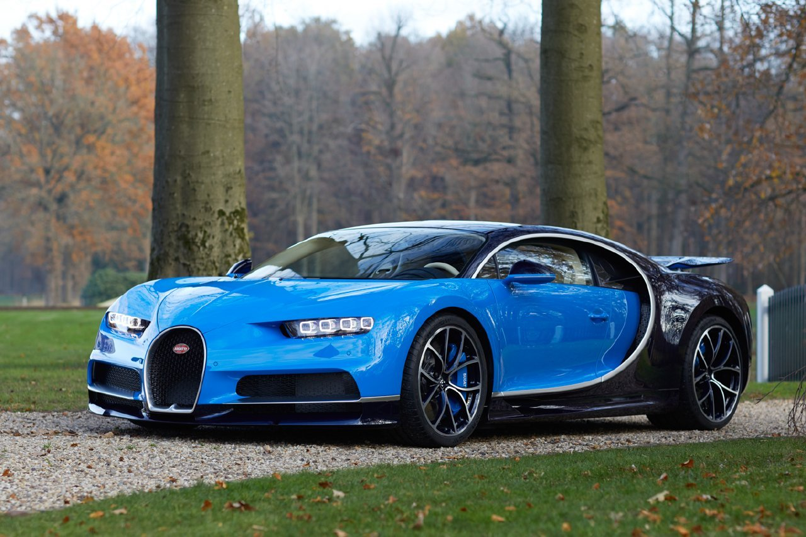
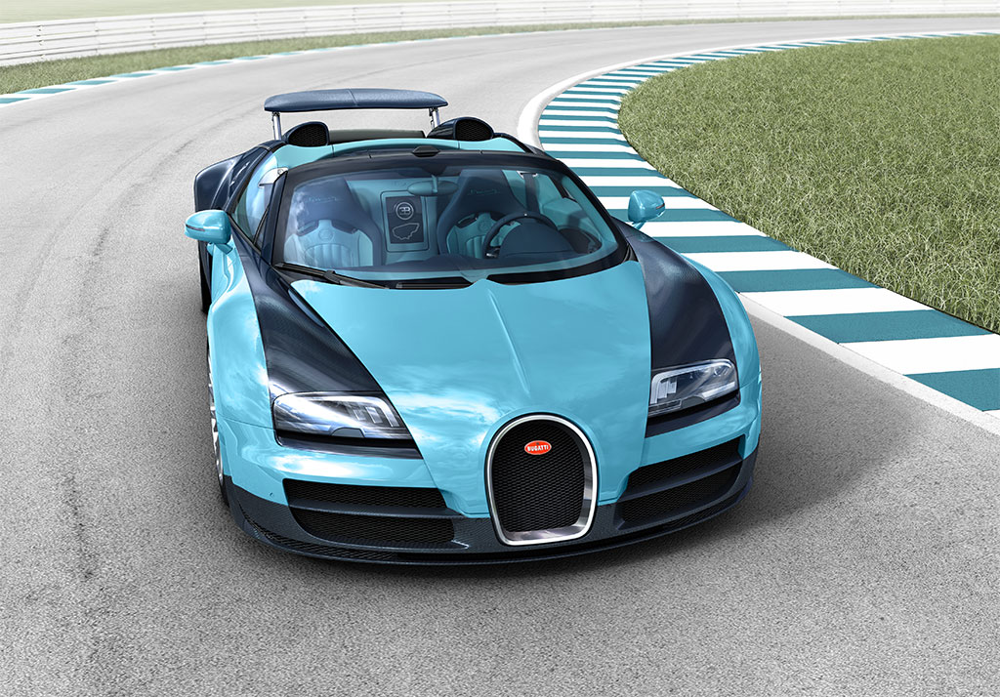
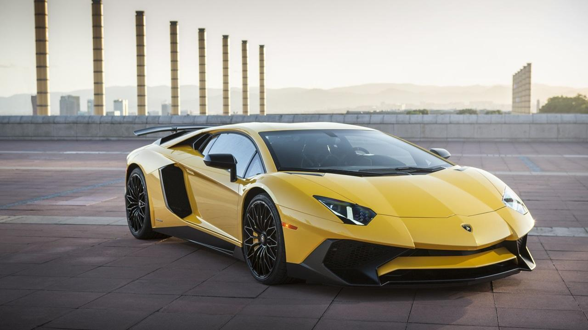

Спортивный автомобиль-это автомобиль, разработанный с акцентом на динамические характеристики, такие как управляемость, ускорение, максимальная скорость или острые ощущения от вождения. Спортивные автомобили появились в Европе в начале 1900-х годов и в настоящее время производятся многими производителями по всему миру.
Bugatti Automobiles S.A.S. (кратко: Bugatti — «Буга́тти») — французская автомобилестроительная компания, специализирующаяся на выпуске легковых автомобилей класса люкс под маркой Bugatti. Штаб-квартира — фамильное поместье Шато Сэн-Жан (фр. Château Saint Jean) — и производство находятся в эльзасском городе Мольсеме. Компания входит в состав немецкого концерна Volkswagen AG, президентом является Вольфганг Дюрхаймер.
В 1909 году Этторе Бугатти основал свою собственную компанию[1]. В качестве завода он использовал заброшенную красильню в Мольсеме. Bugatti Type 13 появился в 1910 году и на Гран-при Франции в 1911 году управляемый Эрнестом Фридрихом занял второе место, обогнав более мощные автомобили[2]. После Первой мировой войны немного модифицированный Type 13 выиграл Кубок легковых автомобилей в Ле-Мане в 1920 году. На основе Type 13 были созданы модели Bugatti Type 15, 17, 22 и 23 отличающиеся разной длиной шасси. Bugatti Type 22 c 16-клапанным двигателем занял первые четыре места в Гран-при в Брешии в 1921 году, за что модели Type 13, 15, 17, 22, 23, 27 с 16-клапанными двигателями получили прозвище «Brescia»[3]. Bugatti Type 18, суперкар своего времени, был представлен в 1912 году[4]. Двигатель мощностью в 100 л. с. мог разгонять автомобиль до 160 км/ч[5]. Всего было создано 7 экземпляров.
Automobili Lamborghini S.p.A. (итал: Lamborghini — [lamborˈɡiːni] — Ламборги́ни[7]) — итальянская компания, производитель дорогих спортивных автомобилей под маркой Lamborghini. Находится в коммуне Сант-Агата-Болоньезе, около Болоньи. Компания основана в 1963 году Ферруччо Ламборгини; на тот момент он уже был владельцем крупной компании по производству тракторов.
Ферруччо Ламборгини установил за правило, что автомобили Ламборгини не участвуют в гонках, поэтому в годы его руководства компания не производила гоночных автомобилей. Но, уже оказавшись под руководством Розетти, компания вместе с BMW решила создать автомобиль, пригодный для автогонок. Однако Ламборгини со своей частью задачи не справилась, и автомобиль был целиком разработан спортивным отделением BMW. Позднее он поступил в производство и продажу как BMW M1. В 1986 году для участия в соревнованиях группы «C» компания создала автомобиль Lamborghini QVX. Автомобиль был построен, но проблемы со спонсорами вынудили пропустить сезон. QVX участвовал только в одной непризовой гонке на трассе «Кьялами» (Йоханнесбург) в 1986 году под управлением Тиффа Ниделла (англ. Tiff Needell). Несмотря на то, что автомобиль показал достаточно неплохой результат, программа финансирования была свёрнута. С 1989 по 1993 год Ламборгини поставлял двигатели V12 для автомобилей Формула 1. Двигатели поставлялись для Larrousse, Ligier, Lotus, Minardi. В 1991 году Ламборгини выставила в гонках собственную команду, просуществовавшую лишь один сезон. Этот же двигатель, но под логотипом Chrysler (нового владельца компании), в 1993 году тестировался на McLaren. Хотя по результатам тестирований двигатель рекомендовался для использования в сезоне 1994 года, команда предпочла двигатель от Peugeot, и Chrysler закрыл проект. Для участия в Diablo Supertrophy — соревнованиях одной модели, проводившихся ежегодно с 1996 по 1999 годы, компания предоставила две модификации автомобиля Lamborghini Diablo — Diablo SVR в первый год и Diablo 6.0 GTR в остальные 3 года. Lamborghini разрабатывал Lamborghini Murciélago R-GT для участия в чемпионате FIA GT и 24 часа Ле-Мана. Наилучшие результаты всех этих соревнований — первое место (стартовал последним) в классе LMGT1 на трассе «Каталунья» в серии «Ле-Ман» 2009 г. (автомобиль российской команды «ИнтерПрогрессБанк СПАРТАК Рейсинг») и третье место (стартовал пятым) при открытии чемпионата FIA GT в Валенсии (автомобиль был выставлен командой Reiter Engineering)
 Дальше